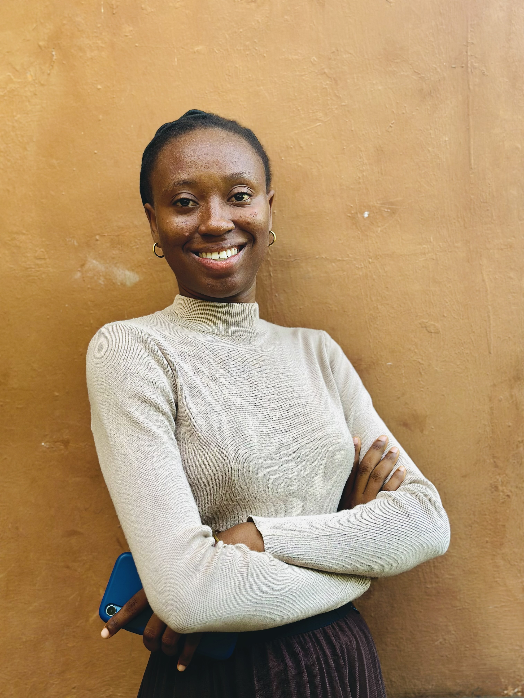

Orokwa Lauretta

WORK EXPERIENCE
Meecroft couture- Personal assistant and sales representative
- Provided effective responses to customer queries and complaints on products purchased or services rendered.
- Scheduling of appointments for customers.
- Achieved an increase in sales by proactively informing customers of new products.
- Consistently followed up on customer's complaints on social media handles and resolved them, and requested reviews from customers to ensure they customer’s satisfaction.
- Worked on financial reports.
- Devised a daily routine that significantly improved the process of daily reports for products being sold.
EDUCATION
- Yaba College of Technology, Yaba Lagos - National diploma in science laboratory technology (2019 - 2021)
- Tai Solarin University of Education- B.ED in mathematics education (on-going)
CERTIFICATION
- Equipped virtual assistant boot camp- (May-June 2024)
CONTACT ME